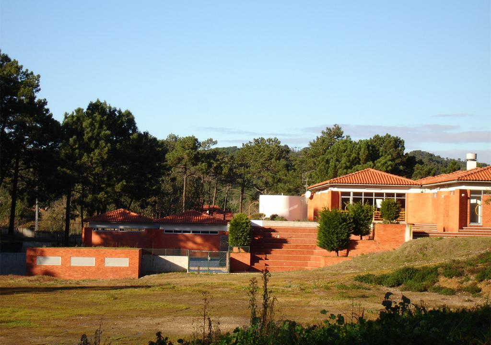

O Parque de Campismo Orbitur Foz do Arelho conta com restaurante e acesso WiFi grátis.
O parque de campismo tem uma piscina exterior sazonal.
É recomendado para umas férias económicas, em plena comunhão com a natureza, descontraídas, e cheias de aventura.
